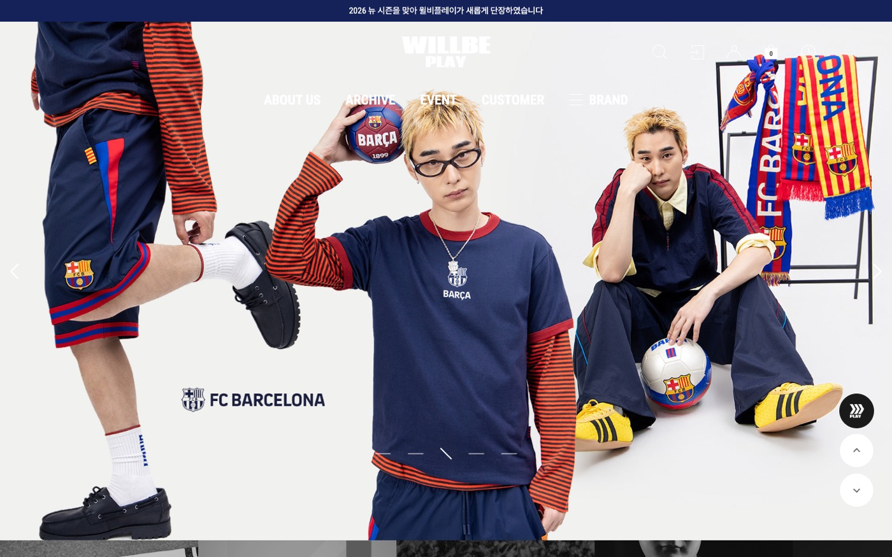
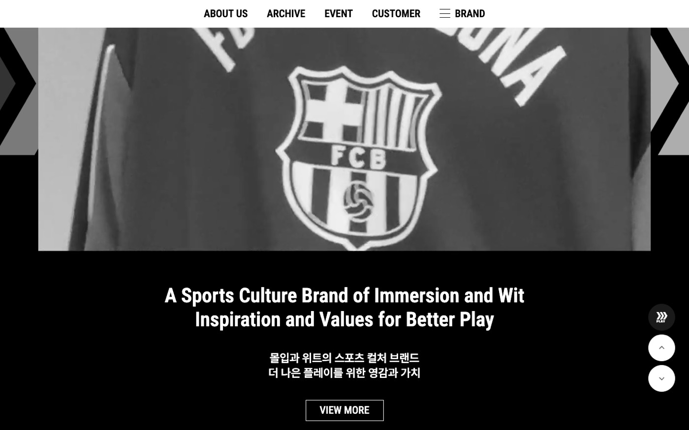
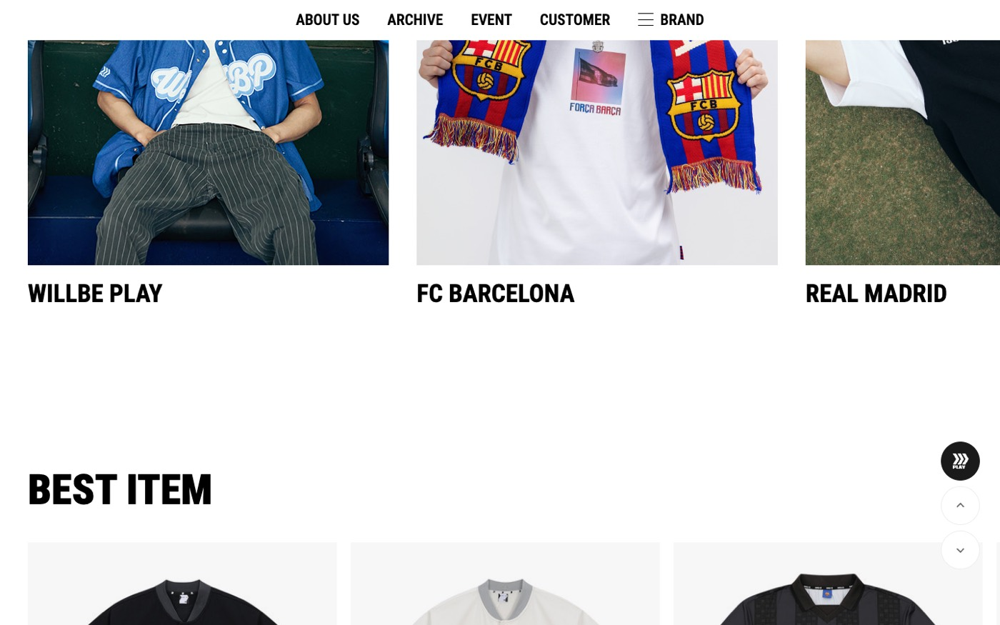
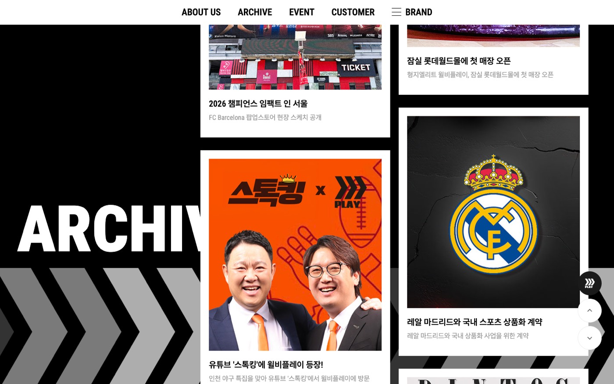
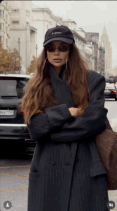
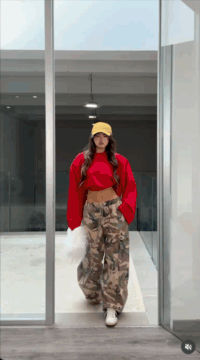

온라인 사이트 & 콘텐츠 제작
방향 정리
한눈에 보기
대표님께서 현재 계획하고 계신 방향과 일정을 바탕으로, 온라인 사이트와 콘텐츠 제작 관련 내용을 정리하여 공유드립니다.
현재 가장 집중하고 계신 부분입니다. 사이트와 SNS에 함께 활용할 사진·영상 콘텐츠 제작을 중심으로 필요한 작업 범위를 정리했습니다.
현재 단계에서는 큰 공사 없이 방향성 논의와 기본 정비까지 가능하며, 리뉴얼은 추후 단계적으로 검토할 수 있습니다.
정기 촬영 스케줄에 맞춘 근무 일정, 콘텐츠 제작과 웹사이트 유지보수 업무 일정 조율, 작업 도구(디자인·영상 편집 툴, AI 어시스턴트)의 활용 범위 및 예산 확정이 필요합니다.
현재 상황
- 쇼핑몰 활성화, 관리자 권한 확보, 디자인 원본 백업까지 완료되어 사이트를 직접 수정·관리할 수 있는 상태입니다.
- 사이트를 살펴본 결과 연결되지 않은 버튼(인스타그램·카카오톡 등) 같은 작은 오류가 확인되었으며, 요청 시 정비가 가능합니다.
- 사이트의 SHOWROOM(룩북) 콘텐츠는 2024년 시즌 이후 업데이트되지 않은 상태로, 사이트 업데이트를 위해서도 새로운 사진·영상 콘텐츠가 필요한 상황입니다.
웹사이트 레퍼런스
①·②는 스크롤·호버 액션과 분위기를 분명하게 보여드리기 위한 다소 실험적인 사례이며, ③은 같은 효과와 기획 방향을 실제 쇼핑몰에 맞게 적용한 사례입니다.
① Rabidstudio
rabidstudio.com ↗사진작가의 포트폴리오(작업물 모음) 겸 온라인 매거진 용도의 사이트로, 룩북·매거진 느낌의 사이트를 지향하는 기획 방향에 대한 레퍼런스입니다.
작업물을 나열한 WORK 메뉴와 작가 소개 및 협업 문의 창구인 CONTACT 메뉴 모두 작가 본인의 아이덴티티가 담긴 유니크한 분위기로 구성되어 있습니다.


② Kinoria Studio
kinoria.studio ↗디자인 요소가 강한 웹사이트로, 쇼핑몰 역할에 국한되지 않고 볼거리와 사이트 자체의 재미 요소를 부여하고자 하는 기획 방향에 대한 레퍼런스입니다.
특히 스크롤 액션(화면을 아래로 내릴 때마다 적용되는 애니메이션)과 콘텐츠별 재미 요소, 호버 액션(마우스 커서를 갖다 대면 나타나는 숨은 장치)이 특징입니다. 사진이나 영상을 단순히 목록으로 보여주는 데 그치지 않아, 고객이 사이트에 접속하는 것만으로도 한 편의 체험형 전시를 관람하는 듯한 효과를 줍니다.


③ WILLBE PLAY
wb-play.co.kr ↗스포츠 컬처 브랜드 윌비플레이의 쇼핑몰 웹사이트로, 앞선 레퍼런스의 스크롤 액션과 호버 액션을 쇼핑몰 고객층에 맞게 적절한 수준으로 적용한 사례입니다.
효과와 기획 의도를 실제 상품 판매와 브랜드 이야기에 자연스럽게 녹여낸 구성입니다. 판매 상품과 브랜드 분위기는 림핏과 다르지만, 홈페이지 구성과 배치, 효과 적용 방식을 참고하기에 적합합니다.
첫 화면 전체를 화보 슬라이드로 채워 브랜드 분위기를 먼저 보여줍니다.
흑백 이미지와 짧은 문구로 브랜드 소개를 메인 화면 안에 담았습니다.
취급 브랜드별 카드로 나누어 보여주는 구성으로, 림핏의 카테고리 확장(패션·화장품·신발·가방 등) 또는 포괄 브랜드 구조에 응용할 수 있습니다.
대표 상품을 깔끔한 목록으로 보여주어, 분위기 연출과 쇼핑 편의를 함께 챙깁니다.
매장 오픈·팝업·협업 소식 등을 매거진처럼 모아 보여주는 공간으로, 림핏의 SHOWROOM(룩북)과 매장 소식에 응용할 수 있습니다.




참고로 이 문서에도 화면을 내릴 때 내용이 떠오르는 간단한 스크롤 액션이 적용되어 있습니다.
웹사이트 방향성
대표님께서 말씀해주신 방향을 사이트 구성 기준으로 정리한 내용입니다.
- 상품을 단순히 나열하는 쇼핑몰이 아닌, 룩북·매거진처럼 "보는" 사이트
- 시즌 룩북과 스타일링 화보를 중심에 두고, 화보 속 상품에서 바로 구매로 이어지는 구조
- 메인 화면에 브랜드 분위기를 보여주는 연출을 더해, 사이트 자체가 마케팅 요소가 되는 방향
- 휴대폰 접속 비중을 고려하여, PC의 호버 액션은 휴대폰에서 스크롤 액션 또는 터치 시 변화하는 효과로 대체
- 화장품·신발·가방·액세서리·선글라스 등으로 카테고리를 확장할 수 있는 메뉴 구조
단계별 진행
현재 구조에서 가능한 작업
큰 공사 없이, 요청 시 진행 가능한 범위입니다.
- 연결되지 않은 버튼·링크 등 오류 정비 가능
- 인스타그램·카카오톡 채널 연결 가능
- 새로 촬영한 사진으로 메인 배너 교체 가능
- SHOWROOM 새 시즌 룩북 업데이트 가능
추후 — 방향 확정 후
방향성 논의 후 단계적으로 검토할 수 있는 범위입니다.
- 메인 화면 룩북·매거진형 리뉴얼
- 스크롤·호버 등 연출 효과 적용
- 카테고리 확장 및 메뉴 구조 개편
- 브랜드명·사업자 구조 결정 사항 반영
카페24 구현 범위
기존에 외주로 개발된 현재 사이트(카페24 기반 커스텀 디자인)의 코드와 페이지 구성을 직접 분석한 결과, 별도의 서버 구축 없이 아래 범위까지 구현이 가능한 것으로 확인되었습니다.
구현 가능 범위
현재 메인 화면은 직접 수정할 수 있는 커스텀 코드로 구성되어 있으며, 이미지 슬라이드 기능도 이미 적용되어 있습니다. 이를 바탕으로 전면 커스텀이 가능하며, 스크롤 액션·호버 액션·영상 배치 등 레퍼런스 수준의 연출을 적용할 수 있습니다.
현재 SHOWROOM 메뉴는 시즌별 목록·상세 페이지로 별도 제작되어 있어, 이 구조를 확장하는 방식으로 새 시즌 룩북 페이지를 추가할 수 있습니다.
카페24 기본 기능 위에 디자인이 입혀진 구조로, 기능은 그대로 유지하면서 디자인(글꼴·여백·색감)을 룩북 분위기에 맞게 정리할 수 있습니다.
관리자 화면에서 자유롭게 추가 및 변경할 수 있어, 카테고리 확장 시 별도 개발 부담이 적습니다.
제약 사항
- 결제·주문·회원 등 쇼핑몰 핵심 기능은 카페24 기본 틀을 따라야 하므로, 해당 화면은 자유로운 연출에 한계가 있습니다.
- 연출 효과를 과하게 넣거나 고화질 사진·영상을 많이 사용할 경우 사이트 속도가 느려질 수 있습니다.
단계별 적용 방식
- 1단계 — 메인 화면과 룩북(쇼룸) 페이지에 연출을 집중하고, 나머지 쇼핑 페이지는 깔끔하고 편리하게 정리하는 방식이 가능합니다.
- 2단계 — 오픈 후 고객 반응에 따라 스크롤·호버 등 재미 요소를 점차 더해갈 수 있습니다.
- 메인 배너와 룩북 사진은 대표님께서 관리자 화면에서 직접 교체하실 수 있는 구조로 만들 수 있어, 시즌마다 별도의 개발 작업 없이 콘텐츠를 업데이트하실 수 있습니다.
콘텐츠 제작
사이트와 SNS에 활용할 사진·영상 콘텐츠는 대표님께서 현재 가장 집중하고 계신 부분으로, 공유해주신 레퍼런스를 바탕으로 필요한 작업 범위를 정리했습니다.
영상 레퍼런스
대표님께서 자주 공유해주신 인스타그램 릴스 레퍼런스 계정입니다.
인스타그램 릴스 레퍼런스
인스타그램 릴스 레퍼런스


분위기 참고용 미리보기이며, 원본 영상의 저작권은 각 계정에 있습니다.
추후 실제 영상 콘텐츠 제작을 시작할 때에는 림핏 영상 콘텐츠에 가져오고 싶은 요소나 기획 의도를 대표님과 함께 이야기하며 방향을 맞춰가게 됩니다. 공유해주신 레퍼런스 영상들은 이러한 논의를 거치면 충분히 편집 가능한 난이도의 콘텐츠입니다.
함께 논의할 내용 예시
- 촬영 구도와 카메라 움직임
- 편집 리듬 (장면 전환 속도, 컷 길이)
- 스타일링·코디 구성 방식
- 인물 연출 (표정·포즈, 얼굴 노출 여부)
- 색감·필터 등 전체 톤
- 음악·자막 사용 방식
콘텐츠 아이디어 예시
공유해주신 레퍼런스와 현재 매장 상황을 바탕으로 정리해본 콘텐츠 아이디어 샘플입니다.
신상품 한 벌을 주인공으로, 매장이 있는 가로수길 거리나 매장 안에서 전신·상반신·디테일을 여러 각도로 촬영해 음악 박자에 맞춰 짧게 이어 붙인 영상입니다. (레퍼런스 릴스 ① 형식)
매장 입구나 피팅룸 문처럼 같은 장소·같은 구도에서, 지나갈 때마다 코디가 바뀌는 영상입니다. 한 편에 여러 벌을 담을 수 있어 시즌 신상품이나 가방·모자·선글라스 등 액세서리 매칭을 한 번에 보여주기 좋습니다. (레퍼런스 릴스 ② 형식)
시즌마다 컨셉과 분위기를 정해 촬영한 화보 사진을 매거진처럼 편집하여, 림핏의 시즌 무드를 한눈에 보여주는 콘텐츠입니다.
착용 컷과 소재·디테일 컷을 같은 톤으로 보정하여, 옷의 분위기와 정보를 함께 전달하는 사진입니다.
입고 현장, 매장 디스플레이, 촬영 비하인드 등 매장의 일상을 짧은 영상이나 사진으로 가볍게 보여주는 콘텐츠입니다.
레퍼런스 기준 편집 작업 범위
공유해주신 레퍼런스 영상 수준의 콘텐츠를 만들 때 필요한 편집 작업을 난이도별로 정리했습니다.
- 컷 편집 (여러 장면 이어 붙이기, 불필요한 부분 자르기)
- 릴스 규격(세로 9:16) 맞춤
- 자막·텍스트 삽입
- 음악 삽입 및 박자에 맞춘 장면 전환
- 착장 전환 편집 (레퍼런스 릴스 ② 형식)
- 사진 보정 및 색감 통일
- 짧은 컷을 빠르게 잇는 리듬감 있는 편집 (레퍼런스 릴스 ① 형식)
- 속도 조절을 활용한 장면 연출
- 영상 색보정을 통한 브랜드 톤 통일
- 간단한 텍스트·그래픽 애니메이션
- 반복 사용할 편집 템플릿 제작
※ 단, 모션그래픽, 3D, 특수효과 등 전문 영상 작업은 외주를 권장합니다.
작업 지원 비용
콘텐츠 제작과 사이트 작업에 사용하는 작업 도구의 월 구독 비용입니다.
작업 도구는 실제 활용도에 따라 필요한 항목만 추려 요금제와 예산을 확정할 수 있습니다.
필요한 지원 사항
콘텐츠 제작과 사이트 운영을 꾸준히 이어가기 위해 아래 사항에 대한 조율이 필요합니다.
추후 계획될 정기 촬영 스케줄에 맞추어, 촬영본 전달부터 편집까지 이어지는 근무 일정을 확립합니다.
콘텐츠 제작과 웹사이트 유지보수 업무의 비중에 맞추어 주간 업무 일정을 조율합니다.
콘텐츠 제작과 디자인·개발에 사용할 디자인·영상 편집 툴, AI 어시스턴트 등을 실제 활용도에 따라 필요한 범위로 추리고, 이에 맞는 예산을 확정합니다.
진행 방식
- 정기 촬영 진행 및 촬영 스케줄 공유
- 레퍼런스 공유 시 마음에 드는 점을 한 줄 코멘트로 함께 전달
- 작업 도구 예산 범위 결정
- 카페24 관리자 화면에서 배너·상품 등 콘텐츠 직접 반영 가능
- 영상·사진 편집
- 웹사이트 유지보수 및 콘텐츠 사이트 반영
- 사이트 방문자 통계 확인 및 정리
콘텐츠 업로드 방식과 일정은 추후 함께 논의하여 정할 수 있습니다.
예상 추진 일정
순서대로 진행하면 좋을 단계를 정리했습니다.
- 준비레퍼런스 방향 논의, 작업 도구 선정, 테스트 편집(영상 콘텐츠 2~3편), 요청 시 사이트 기본 정비
- 정기 운영정기 촬영 일정에 맞춘 영상 콘텐츠 편집, 상품 사진 편집, SHOWROOM 업데이트
- 확장시즌 룩북 콘텐츠 제작, 콘텐츠 반응을 바탕으로 사이트 리뉴얼 범위 검토
공유 요청 사항
언제든지 공유 부탁드리는 부분
- 마음에 드는 웹사이트·영상 레퍼런스 (좋았던 점 한 줄과 함께)
- 원하시는 색감 및 분위기
- 브랜드명·사업자 등 결정되는 사항
사이트 오픈 및 업무 시작 전 공유가 필요한 부분
- 정기 촬영 일정 (근무 일정 기준)
- 콘텐츠 제작과 웹사이트 유지보수 업무 비중
- 작업 도구 활용 범위 및 월 예산
- 콘텐츠 업로드 방식 및 일정